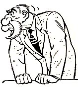

The war has 'psychic and social consequences,'
i.e. it effects us on both the macro level and the micro level, in the culture and body
politic, and in man's psychic life (in a re-arrangement or a shift in his sensorium). E.g.
the 'dissociation of sensibility' that occurred in English poetry between the 16th and
17th centuries, documented by T.S. Eliot.
"For most of our lifetime civil
war has been raging in the world of art and entertainment. . . . Moving pictures,
gramophone records, radio, talking pictures. . . ." This is the view of Donald
McWhinnie, analyst of the radio medium. Most of this civil war affects us in the depths of our
psychic lives, as well, since the war is conducted by forces that are extensions
and amplifications of our own beings. Indeed, the interplay among media is only another
name for this civil war" that rages in our society and our psyches alike. "To
the blind all things are sudden," it has been said. The crossings or hybridizations
of the media release great new force and energy as by fission or fusion. There need be no
blindness in these matters once we have been notified that there is anything to observe.
In terms of strict parallelism, would it not be more correctly analogous to say, 'As
the printing press cried out for the telegraph, so did the radio cry out for TV'?
Nationalism wasn't a pre-existent medium that combined with the printing press to create a
hybrid, but was one of its direct consequences.
It has now
been explained that media, or the extensions of man, are "make happen" agents,
but not "make aware" agents. The hybridizing or compounding of these agents
offers an especially favorable opportunity to notice their structural components and
properties. "As the silent film cried out for sound, so does the sound film cry out
for color," wrote Sergei Eisenstein in his Notes of a Film Director. This type
of observation can be extended systematically to all media: "As the printing press
cried out for nationalism, so did the radio cry out for tribalism." These media,
being extensions of ourselves, also depend upon us for their interplay and their
evolution. The fact that they do interact and spawn new progeny has been a source of
wonder over the ages. It need baffle us no longer if we trouble to scrutinize their
action. We can, if we choose, think things out before we put them out.
Just as the earth is a more reliable map of
itself than a mercator projection, Athens was a more relevant school for life than the
lyceum prescribed by a utopian dreamer.
Plato, in
all his striving to imagine an ideal training school, failed to notice that Athens was a
greater school than any university even he could dream up. In other words, the greatest
school had been put out for human use before it has been thought out. Now, this is
especially true of our media. They are put out long before they are thought out. In fact,
their being put outside us tends to cancel the possibility of their being thought of at
all.
Utopian thinkers like Plato and Marx are
invariably a century or more behind their times because utopian philosophies are always
backward looking, postulating a perfect society based on an Earthly Paradise from the
archaic past. Only a conservative thinker, like Edmund Burke, can be truly radical.
Everybody
notices how coal and steel and cars affect the arrangements of daily existence. In our
time, study has finally turned to the medium of language itself as shaping the
arrangements of daily life, so that society
begins to look like a linguistic echo or repeat of language norms, a fact that has
disturbed the Russian Communist party very deeply. Wedded as they are to
nineteenth-century industrial technology as the basis of class liberation, nothing could
be more subversive of the Marxian dialectic than the idea that linguistic media shape
social development, as much as do the means of production.
This seems prophetic in retrospect. The
question arises whether violent nationalistic movements in China, Africa, India and
Pakistan can be assigned to increased literacy or are the outcome of religious, cultural
and geopolitical forces. It is obvious that illiterate nomadic peoples are equally capable
of generating wholesale violence against static agricultural societies.
In fact, of
all the great hybrid unions that breed furious release of energy and change, there is none
to surpass the meeting of literate and oral cultures. The giving to man of an eye for an
ear by phonetic literacy is, socially and politically, probably the most radical explosion
that can occur in any social structure. This
explosion of the eye, frequently repeated in "backward areas," we call
Westernization. With literacy now about to hybridize the cultures of the Chinese,
the Indians, and the Africans, we are about to experience such a release of human power
and aggressive violence as makes the previous history of phonetic alphabet technology seem
quite tame.
"Electric writing and speed pour upon
him, instantaneously and continuously, the concerns of all other men. He becomes tribal
once more. The human family becomes one tribe again." UM, Chapter 18
The emotional complexity of oral cultures is dramatized in Conrad's story, The
Lagoon.
That is
only the East side story, for the electric implosion now brings oral and tribal
ear-culture to the literate West. Not only does the visual, specialist, and fragmented
Westerner have now to live in closest daily association with all the ancient oral cultures
of the earth, but his own electric technology now begins to translate the visual or eye
man back into the tribal and oral pattern with its seamless web of kinship and
interdependence. We know from our own past the kind of energy that is released, as by
fission, when literacy explodes the tribal or family unit. What do we know about the
social and psychic energies that develop by electric fusion or implosion when literate
individuals are suddenly gripped by an electromagnetic field, such as occurs in the new
Common Market pressure in Europe? Make no mistake, the fusion of people who have known
individualism and nationalism is not the same process as the fission of
"backward" and oral cultures that are just coming to individualism and
nationalism. It is the difference between the "A" bomb and the "H"
bomb. The latter is more violent, by far. Moreover, the products of electric fusion are
immensely complex, while the products of fission are simple. Literacy creates very much
simpler kinds of people than those that develop in the complex web of ordinary tribal and
oral societies. For the fragmented man creates the homogenized Western world, while oral societies are made up of people
differentiated, not by their specialist skills or visible marks, but by their unique
emotional mixes. The oral man's inner world is a tangle of complex emotions and
feelings that the Western practical man has long ago eroded or suppressed within himself
in the interest of efficiency and practicality.

"What's good for General Bullmoose is good for
everybody!"
The
immediate prospect for literate, fragmented Western man encountering the electric
implosion within his own culture is his steady and rapid transformation into a complex and depth-structured person emotionally
aware of his total interdependence with the rest of human society. Representatives
of the older Western individualism are even now assuming the appearance, for good or ill,
of Al Capp's General Bull Moose or of the John Birchers, tribally dedicated to opposing
the tribal. Fragmented, literate, and visual individualism is not possible in an
electrically patterned and imploded society. So what is to be done? Do we dare to confront
such facts at the conscious level, or is it best to becloud and repress such matters until
some violence releases us from the entire burden? For the fate of implosion and
interdependence is more terrible for Western man than the fate of explosion and
independence for tribal man. It may be merely temperament in my own case, but I find some easing of the burden in just
understanding and clarifying the issues. On the other hand, since consciousness and
awareness seem to be a human privilege, may it not be desirable to extend this condition
to our hidden conflicts, both private and social?
As opposed to a consciousness held hostage to
unconscious mechanisms imposed by media. 'The unexamined life is not worth living.'
The present
book, in seeking to understand many media, the conflicts from which they spring, and the
even greater conflicts to which they give rise, holds out the promise of reducing these
conflicts by an increase of human autonomy.
Let us now note a few of the effects of media hybrids, or of the interpenetration of one
medium by another.
The Pentagon uses the world itself as a strategy map. While not instantaneous
like electricity, jet travel is so speedy we no longer need refer to cartographic
representations.
Just as there is no privacy in tribal societies, where everyone knows all there is to
know about everyone else.
Likewise, the human nervous system is no longer only internal; it has been outered into
an electrified information database where it can be observed as a map of itself (rather
than as commentary in a psychoanalyst's notebook or an existential novel).
Life at the
Pentagon has been greatly complicated by jet travel, for example. Every few minutes an
assembly gong rings to summon many specialists from their desks to hear a personal report
from an expert from some remote part of the world. Meantime, the undone paper work mounts
on each desk. And each department daily dispatches personnel by jet to remote areas for
more data and reports. Such is the speed of this process of the meeting of the jet plane,
the oral report, and the typewriter that those going forth to the ends of the earth often
arrive unable to spell the name of the spot to which they have been sent as experts. Lewis
Carroll pointed out that as large-scale maps got more and more detailed and extensive,
they would tend to blanket agriculture and rouse the protest of farmers. So why not use the actual earth as a map of itself?
We have reached a similar point of data gathering when each stick of chewing gum we reach
for is acutely noted by some computer that translates our least gesture into a new probability
curve or some parameter of social science. Our private and corporate lives have become
information processes just because we have put our central nervous systems outside us in
electric technology. That is the key to Professor Boorstin's bewilderment in The Image,
or What Happened to the American Dream.
As an extension of sight, the electric light is
exactly analogous to electromagnetism since it operates in a total field: it is to the
visible world what electromagnitism is to the invisible world, or to the central nervous
system.
The
electric light ended the regime of night and day, of indoors and out-of-doors. But it is
when the light encounters already existing patterns of human organization that the hybrid
energy is released. Cars can travel all night, ball players can play all night, and
windows can be left out of buildings. In a word, the message of the electric light is total change. It is pure
information without any content to restrict its transforming and informing power.
The content of the electric light is the visible
world. Similarly, the content of electromagnetism is the invisible tactile world of the
entire human sensorium. Thus it shares with the electric light the characteristic of
containing a whole world as its content.
If the
student of media will but meditate on the power of this medium of electric light to
transform every structure of time and space and work and society that it penetrates or
contacts, he will have the key to the form of the power that is in all media to reshape
any lives that they touch. Except for light, all other media come in pairs, with one
acting as the "content" of the other, obscuring the operation of both.
The sinister owners of media empires often have
a better handle on the technology than programming critics. Sometimes cynicism is a better
guide to understanding such phenomena than the idealism of content nannies blinkered with
moral indignation and regressive prescriptive remedies.
It is a
peculiar bias of those who operate media for the owners that they be concerned about the program content of radio, or press, or film.
The owners themselves are concerned more about the media as such, and are not inclined to
go beyond "what the public wants" or some vague formula. Owners are aware of the
media as power, and they know that this power has little to do with "content" or
the media within the media.
Why do the cultural slobs savor the daily
melodrama of celebrity scandal and the fall of the mighty with such lubricious
lip-smacking delight? Is this a belated defense mechanism? I.e. the need to destroy the
sick fantasy life they represent before it corrupts them? Or is it the nature of of
celebrity culture to test the limits of proletarian resentment, until it self-destructs?
When the
press opened up the "human interest"
keyboard after the telegraph had restructured the press medium, the newspaper killed the
theater, just as TV hit the movies and the night clubs very hard. George Bernard Shaw had
the wit and imagination to fight back. He put the press into the theater, taking over the
controversies and the human interest world of the press for the stage, as Dickens had done
for the novel. The movie took over the novel and the newspaper and the stage, all at once.
Then TV pervaded the movie and gave the theater-in-the-round back to the public.
Much as the Internet influenced the format of
TV news programs and educational TV (and vice versa).
What I am
saying is that media as extensions of our senses institute new ratios, not only among our
private senses, but among themselves, when they interact among themselves. Radio changed
the form of the news story as much as it altered the film image in the talkies. TV caused
drastic changes in radio programming, and in the form of the thing or documentary
novel.
'Following Aquinas's analogical reasoning,
[McLuhan] concluded that the sound of any word reverberates with the first creative
utterance and potentially contributes to the realization of God's continuing presence in
His world.' (Philip Marchand)
Because early TV was live and existential, it returned literate man to the immediacy of
the tribal meeting and to a renewed sense of humanity.
It is the
poets and painters who react instantly to a new medium like radio or TV. Radio and
gramophone and tape recorder gave us back the poet's
voice as an important dimension of the poetic experience. Words became a kind of
painting with light, again. But TV, with its deep-participation mode, caused young poets
suddenly to present their poems in cafes, in public parks, anywhere. After TV, they
suddenly felt the need for personal contact with their public. (In print-oriented Toronto,
poetry-reading in the public parks is a public offense. Religion and politics are
permitted, but not poetry, as many young poets recently discovered.)
John
O'Hara, the novelist, wrote in The New York Times Book Review of November 27, 1955:
You get a great satisfaction
from a book. You know your reader is captive inside those covers, but as novelist you have
to imagine the satisfaction he's getting. Now, in the theater—well, I used to drop in
during both productions of Pal Joey and watch, not imagine, the people enjoy it.
I'd willingly start my next novel—about a small town—right now, but I need the
diversion of a play.
Another example of McLuhan's huge comfort zone and scope in choice of subject matter
and areas of interest. He found meaning not only in high art and the great books, but in
banal and commonplace exhibits of popular culture.
In our age
artists are able to mix their media diet as easily as their book diet. A poet like Yeats
made the fullest use of oral peasant culture in creating his literary effects. Quite
early, Eliot made a great impact by the careful use of jazz and film form. The Love
Song of J. Alfred Prufrock gets much of its power from an interpenetration of film
form and jazz idiom. But this mix reached its greatest power in The Waste Land and Sweeney
Agonistes. Prufrock uses not only film form but the film theme of Charlie Chaplin, as
did James Joyce in Ulysses. Joyce's Bloom is a deliberate takeover from Chaplin
("Chorney Choplain," as he called him in Finnegans Wake). And Chaplin,
just as Chopin had adapted the pianoforte to the style of the ballet, hit upon the
wondrous media mix of ballet and film in developing his Pavlova-like alternation of
ecstasy and waddle. He adopted the classical steps of ballet to a movie mime that
converged exactly the right blend of the lyric and the ironic that is found also in Prufrock
and Ulysses. Artists in various
fields are always the first to discover how to enable one medium to use or to release the
power of another. In a simpler form, it is the technique employed by Charles Boyer
in his kind of French-English blend of urbane, throaty delirium.
The printed
book had encouraged artists to reduce all forms of expression as much as possible to the
single descriptive and narrative plane of the printed word. The advent of electric media
released art from this straitjacket at once, creating the world of Paul Klee, Picasso,
Braque, Eisenstein, the Marx Brothers, and James Joyce.
A headline
in The New York Times Book Review (September 16, 1962) trills: There's Nothing Like
a Best Seller to Set Hollywood a-Tingle.
Time is a ruthless critic. Popular gestalt or patterns of public taste are about as
interesting as week-old newspapers, ephemeral zietgeist that may be safely ignored. This
explains why movies begun as cynical commercial projects based on best-selling novels are
virtually unwatchable a decade later.
Of course,
nowadays, movie stars can only be lured from the beaches or science-fiction or some
self-improvement course by the cultural lure of a role in a famous book. That is the way
that the interplay of media now affects many in the movie colony. They have no more
understanding of their media problems than does Madison Avenue. But from the point of view
of the owners of the film and related media, the best seller is a form of insurance that
some massive new gestalt or pattern
has been isolated in the public psyche. It is an oil strike or a gold mine that can
be depended on to yield a fair amount of boodle to the careful and canny processer.
Hollywood bankers, that is, are smarter than literary historians, for the latter despise
popular taste except when it has been filtered down from lecture course to literary
handbook.
Lillian
Ross in Picture wrote a snide account of the filming of The Red Badge of
Courage. She got a good deal of easy kudos for a foolish book about a great film by
simply assuming the superiority of the literary medium to the film medium. Her book
got much attention as a hybrid.
The parallelism of figurtive lanugauge, literary
forms and hybrid media.
Agatha
Christie wrote far above her usual good level in a group of twelve short stories about
Hercule Poirot, called The Labours of Hercules. By adjusting the classical themes
to make reasonable modern parallels, she was able to lift the detective form to
extraordinary intensity.
See "Tennyson and Picturesque
Poetry" (The interior Landscape: The Literary Criticism of Marshall McLuhan)
Such was,
also, the method of James Joyce in Dubliners and Ulysses, when the precise
classical parallels created the true hybrid energy. Baudelaire, said Mr. Eliot,
"taught us how to raise the imagery of common life to first intensity." It is
done, not by any direct heave-ho of poetic strength, but by a simple adjustment of
situations from one culture in hybrid form with those of another. It is precisely in this
way that during wars and migrations new cultural mix is the norm of ordinary daily life.
Operations Research programs the hybrid principle as a technique of creative discovery.
The Wright brothers were bicycle mechanics.
When the
movie scenario or picture story was applied to the idea article, the magazine world
had discovered a hybrid that ended the supremacy of the short story. When wheels were put
in tandem form, the wheel principle combined with the lineal typographic principle to
create aerodynamic balance. The wheel crossed with industrial, lineal form released the
new form of the airplane.
The moment of discovery is a time of
transcendence. Buddha is smiling because he sees and understands all.
The hybrid
or the meeting of two media is a moment of truth and revelation from which new form is
born. For the parallel between two media
holds us on the frontiers between forms that snap us out of the Narcissus-narcosis.
The moment of the meeting of media is a moment of freedom and release from the ordinary
trance and numbness imposed by them on our senses.